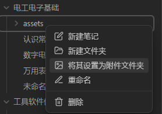

安装
- 安装Git、Node.js、安装Hexo、
- GitHub创建个人仓库创建，仓库公开，仓库名必须是"账号名.github.io"
- 生成SSH添加到GitHub
- hexo部署到GitHub站点文件夹下_config.yml文件中,这段代码替换原本的deploy部分代码
1
2
3
4deploy:
type: git
repo: git@github.com:账号名/账号名.github.io.git #实际上就是SSH
branch: branch_name #你的分支名，一般远程仓库默认分支名是main - 7.设置个人域名(如果你买了的话) 省略，想偷懒了
- 8.发布文章
1
2
3
4
5
6
7
8
9
10hexo init [folder] #新建一个网站
hexo new page page_name #新建分页
hexo new article_name #新建文章
hexo new draft draft_name #新建草稿
hexo clean #清除本地hexo缓存文件
hexo s #运行本地服务器（预览）
hexo g #生成静态文件
hexo d # 部署到服务器(发布)
hexo g -d #生成并部署文件
hexo clean && hexo g && hexo d
对应库的安装
1 | 给我自己看的，并不是说非要安装这些库 |
Obsidian使用时遇到的问题
如何兼容Obsidian与Typora图片保存位置等
Typora进行如下配置，保存位置改为./assets/${filename}.assets  下载插件Custom Attachment
location，然后进行如下配置，保存位置改为
下载插件Custom Attachment
location，然后进行如下配置，保存位置改为./assets/${filename}.assets：


兼容Hexo与Typora的图片设置
hexo的资源文件夹在source/images下，也就是它只处理这个目录下的图片，实际上网上有很多种解决办法，调整typora中图片的设置(我的设置：./assets/${filename}.assets)，修改post_asset_folder:false改为true等等。但这都意味着我typora中图片的位置必须做出改动，如果我偏不呢？
F12查看了html中的路径后，我想，我用批处理把图片移动到public文件夹下就可以了吧。
于是我写了两个批处理代码,放在这个位置
copy_assets.bat
将./source/_posts下的assets全部拷贝到./public/blog下，blog我这里的站点文件夹名，因人而异，如何确定参考下图
1 | @echo off |
看，我这里./public/blog下有html文件，所以是这样的目录。
deploy_hexo_git.bat
用来调用copy_assets.bat,将源码，静态页面部署到github。所以使用时，写好笔记后，双击deploy_hexo_git.bat就完成代码提交，hexo部署了。
1
2
3
4
5
6
7
8
9
10
11
12
13
14
15
16
17
18
19
20
21
22
23
24
25
26
27
28
29@echo off
(
echo Running Hexo commands...
echo Cleaning...
hexo clean
echo Generating...
hexo g
echo Copying assets...
call copy_assets.bat
echo Deploying...
hexo d
echo Git Source Add...
git add .
echo Git Source Commit...
git commit -m "%date%%time%"
echo Git Source Push...
git push origin source
echo Done.
pause
)
兼容Obsidian与Hexo
Hexo + Obsidian + Git 完美的博客部署与编辑方案 - 掘金 (juejin.cn)
<Img>标签图片不能正常显示
采用绝对路径
Obsidian中如何在关系图图谱中隐藏png等附件文件
首先，我使得Obsidian中的图片保存与Typora保持一致了。 在此基础上，将其设置为附件文件夹即可。 
加密文章
使用插件：hexo-blog-encrypt
valine添加评论区(可选)
参考教程：https://cloud.tencent.com/developer/article/1946684
此教程对任何主题通用，但是对于建立文件的位置，不同主题可能有不一样的地方。
举一个例子，
我用的主题是Wikitten，article.ejs的位置是在这里blog\themes\Wikitten\layout\common\article.ejs
因此我这里的步骤是，在注册LeanCloud官网，安装好valine插件后，
先在_config.yml中添加 1
2
3
4
5
6#6、Valine https://valine.js.org
valine: appid: #Leancloud应用的appId
appkey: #Leancloud应用的appKey
verify: false #验证码
notify: false #评论回复提醒
avatar: mm #评论列表头像样式：''/mm/identicon/monsterid/wavatar/retro/hide placeholder: Just go go #评论框占位符blog\themes\Wikitten\layout\common\article.ejs中添加(加到文档末尾就行)
这个和教程不大一样，这部分代码是我在另一个主题中翻到的，它的评论区能自适应尺寸，我觉得更好看
1
2
3
4
5
6
7
8
9
10
11
12
13<% if (theme.valine && theme.valine.appid && theme.valine.appkey){ %>
<section id="comments" class="comments">
<style>
.comments{margin:30px;padding:10px;background:rgb(0, 0, 0); }
@media screen and (max-width:800px){.comments{margin:auto;padding:10px;background:#000}}
</style>
<%- partial('post/valine', {
key: post.slug,
title: post.title,
url: config.url+url_for(post.path)
}) %>
</section>
<% } %>blog\themes\Wikitten\layout\common\post
下新建文件valine.ejs，添加代码： 1
2
3
4
5
6
7
8
9
10
11
12
13
14
15
16
17
18
19
20<div id="vcomment" class="comment"></div>
<script src="//cdn1.lncld.net/static/js/3.0.4/av-min.js"></script>
<script src="//unpkg.com/valine/dist/Valine.min.js"></script>
<script>
var notify = '<%= theme.valine.notify %>' == true ? true : false;
var verify = '<%= theme.valine.verify %>' == true ? true : false;
window.onload = function() {
new Valine({
el: '.comment',
notify: notify,
verify: verify,
app_id: "<%= theme.valine.appid %>",
app_key: "<%= theme.valine.appkey %>",
placeholder: "<%= theme.valine.placeholder %>",
avatar:"<%= theme.valine.avatar %>"
});
}
</script>
发现没，article.ejs和valine.ejs的关系是：
1
2
3|article.ejs
|post
| valine.ejs
添加代码复制功能（可选）
hexo 上传后gitHub 中custom domain 被重置
参考该教程：hexo 上传后gitHub 中custom domain 被重置_shaoin_2的博客-CSDN博客 # obsidian英语学习(可选)